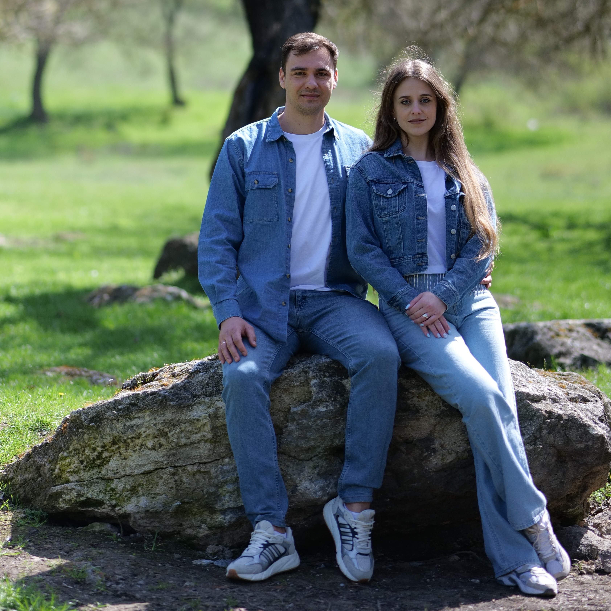

Our Story

We grew up in very different environments and came to Christ at different times in our lives. Stas grew up in a small village and was raised in a Christian church. Although he was baptized at the age of 16, he fully understood his calling only after moving to Chisinau (the capital of Moldova) and starting his ministry.
Sveta lived in Chisinau and grew up in a non-believing home with an Orthodox background, where being an evangelical Christian was often considered "a sect." Throughout her life, she met people who told her about Jesus' sacrifice, but she finally committed her life to Christ at the age of 21, around the time she met Stas.
We got married in 2015, and in 2018, we decided to dedicate our lives to sharing the Gospel and investing in eternity. We now have two sons, Egor and Gleb.
Our Calling
We both believe that the future belongs to the younger generation. That's why we see the importance of investing in youth. We've been serving with Cru full-time since 2020 and have been leading a youth ministry since 2014.
Our Mission. Today, our hearts are grounded in Jesus. We are dedicated to walking with young people and families as they grow in faith. Our dream is to help plant a home church or fellowship group for every 1,000 people in our country, so that everyone in Moldova knows someone who truly follows Jesus. Just as someone once stepped out in faith and invested in the missionaries who reached us, we are now trusting God to raise up partners who will invest in us so we can reach the next generation of Moldova for Christ.
Subscribe to our newsletter to see how God is changing lives in Moldova and pray with us.